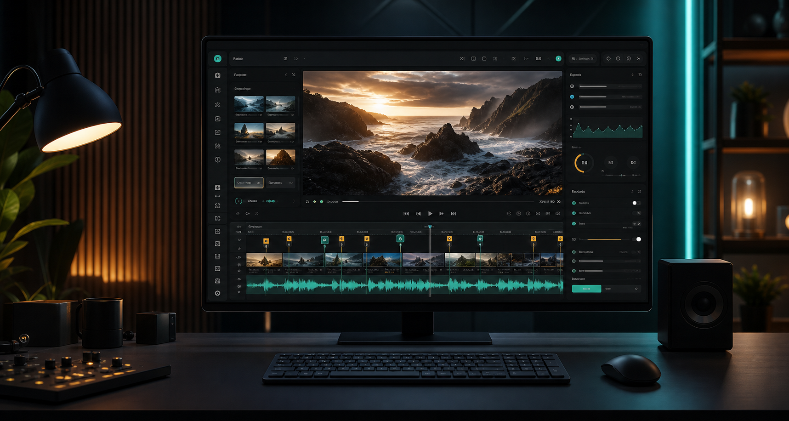

Recebe videos, extrai metadados, cria thumbnail e prepara audio com FFmpeg.
MVP publicado
System Smart Cut
Plataforma para transformar videos longos em cortes inteligentes com IA, editor simples, transcricao, legendas e exportacao para redes sociais.

GitHub Pages hospeda esta pagina publica. O app completo usa servidor Node para login, upload, banco de dados e FFmpeg. Para usuarios usarem o editor real, publique a versao Docker em um VPS.
Gera sugestoes mockadas com inicio, fim, score, motivo e trecho de transcricao.
Exporta cortes selecionados em formato original, horizontal, vertical ou quadrado.